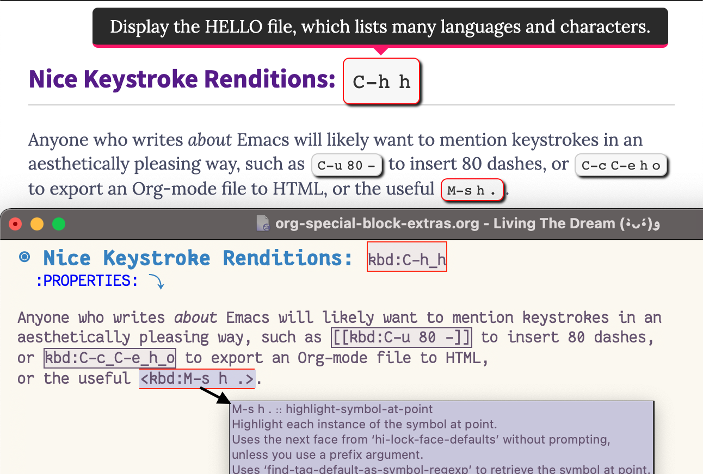

org-special-block-extras
A unified interface for special blocks and links: defblock
Table of Contents
- 1. HTML & LaTeX Setup ignore
- 2. 🧙♂️ Write Once, Export Everywhere: Say Hello to
org-special-block-extras - 3. Block and link types provided by this package
- 3.1. Boxed Text —Calling out super duper info
- 3.2. Folded Details —Let the user see stuff only if they're interested
- 3.3. Nice Keystroke Renditions: kbd:C-h_t
- 3.4. Remark —Inline footnotes, viz HTML tooltips and LaTeX notes in the margin
- 3.5. Glossaries —Define a term once, cite it with
doc:𝒳 - 3.6. Parallel ---Place ideas side-by-side, possibly with a separator
- 3.7.
latex-definitionsfor hiding LaTeX declarations in HTML - 3.8. Graphs ---Org lists, drawn by Graphviz
- 3.9. Switches for every block:
:when,:let,:folded, … - 3.10. Callouts —Note, tip, important, warning, caution
- 3.11. Colours ---
red:𝒳,[[color:#ff0066][𝒳]], and#+begin_red - 3.12. Quotations, cited ---
#+begin_quote KEY - 3.13. Highlights —Colour the background, not the text
- 3.14. Page-wide CSS with
style - 3.15. Markdown export —What survives GitHub, and how to change it
- 3.16. PDF export —The LaTeX packages our blocks need
- 4. Make your own blocks and links —A developer's guide
1. HTML & LaTeX Setup ignore
2. 🧙♂️ Write Once, Export Everywhere: Say Hello to org-special-block-extras
Tired of repeating yourself when writing in Org-mode for LaTeX and HTML
exports? org-special-block-extras is your magical toolkit for
creating custom Org-mode blocks and links that work seamlessly
across backends —without diving into the dark arts of raw HTML or
LaTeX!
2.1. 🎁 What Does It Do?
- 🎨 Style with ease — add colors, badges, tooltips (from a dictionary, Emacs Help, or custom file), keystroke notations, inline editorial comments, or even colourful ASCII cows with fortune cookies.
- 📚 Glossary support — embed hoverable documentation with
doc:links and auto-generated glossaries. - 📦 Add interactive content: from collapsible detail sections and parallel columns to spoiler tags and equational proofs.
- 🎛 Switch any block:
:when (eq backend 'html),:noexport t,:let (N 7),:boxed "Title",:folded t, and:verbatim t, and:C-c_C-c ACTIONwork on every block —ours, yours, or Org's own src and quote blocks; see switches. Use badge-style links to embed GitHub stars, Reddit subs, or custom project metadata via
shields.io.- 🛠 Use
org-defblock,org-deflinkandorg-deftag—Org, extended as one extends Lisp: each is declared like acl-defun, with&optionaland&keyarguments; or, for the terse-minded, with a flattened arglist.- Create powerful custom blocks with
org-defblock: Define a block once and export to LaTeX and HTML effortlessly. With header-args support like:color red :signoff "Thanks!"for locally customised exports. Each block is also a link and a tag, for free; and:fontifysays how it looks in the buffer. - Use
org-deflinkto create custom links, as functions of their label and description. - Use
org-deftagto create custom tags, as functions of the Org sections they tag.
- Create powerful custom blocks with
🧱 Ready-to-Use Custom Blocks
| Block | Use Case |
|---|---|
details |
Foldable sections — perfect for hiding spoilers, proofs, or long explanations. |
parallel |
Display content in multiple columns — great for comparisons or saving space. |
margin |
Add subtle explanatory tooltips or side remarks — delightful for scholarly writing. |
box |
Emphasize content with nicely styled borders — great for callouts or side notes. |
spoiler |
Hide content visually until the reader chooses to see it — useful in teaching. |
tree |
Display proof trees and logical derivations — fantastic for formal logic. |
rename |
Automated text substitution — great for translation or glossary effects. |
stutter |
Repeat content multiple times — e.g., for emphasis or stylistic flair. |
solution |
Reveal answers in stages — perfect for educational content. |
org-demo |
Show Org markup alongside its rendered result — ideal for tutorials. |
latex-definitions |
Hide LaTeX-only declarations from HTML — keep your source clean. |
calc |
Step-by-step equational reasoning — beautiful for math walkthroughs. |
graph |
Draw nested Org lists as Graphviz diagrams — C-c C-c renders a PNG in place. |
note, tip, warning, … |
GitHub-style callouts —a coloured rule and a titled heading. |
highlight |
Colour a paragraph's background, rather than its text. |
package-docs |
A table of a package's public API, each name a doc: tooltip. |
style |
Page-wide CSS, verbatim; nothing outside HTML. |
Ready-to-Use Custom Links
| Link | Purpose |
|---|---|
doc:label |
Glossary tooltips —e.g., cl-loopThe Common Lisp ‘loop’ macro.
Valid clauses include:
For clauses:
for VAR from/upfrom/downfrom EXPR1 to/upto/downto/above/below EXPR2
[by EXPR3]
for VAR = EXPR1 then EXPR2
for VAR in/on/in-ref LIST [by FUNC]
for VAR across/across-ref ARRAY
for VAR being:
the elements of/of-ref SEQUENCE [using (index VAR2)]
the symbols [of OBARRAY]
the hash-keys/hash-values of HASH-TABLE [using (hash-values/hash-keys V2)]
the key-codes/key-bindings/key-seqs of KEYMAP [using (key-bindings VAR2)]
the overlays/intervals [of BUFFER] [from POS1] [to POS2]
the frames/buffers
the windows [of FRAME]
Iteration clauses:
repeat INTEGER
while/until/always/never/thereis CONDITION
Accumulation clauses:
collect/append/nconc/concat/vconcat/count/sum/maximize/minimize FORM
[into VAR]
Miscellaneous clauses:
with VAR = INIT
if/when/unless COND CLAUSE [and CLAUSE]... else CLAUSE [and CLAUSE...]
named NAME
initially/finally [do] EXPRS...
do EXPRS...
[finally] return EXPR
For more details, see Info node ‘(cl)Loop Facility’.
(fn CLAUSE...); our own terms, even <<<radio targets>>>, too |
kbd: |
Stylized keybindings with tooltips — e.g., kbd:C-x_C-e; in Emacs, 〔C-x C-e〕, click to run |
color: or red: |
Inline text colouring — supports both names and hex codes. |
highlight: |
Colour the background instead —so highlighted in Emacs too. |
palette: |
A button for readers to pick the page's background colour. |
toggle-details: |
A button to unfold, or fold, every details block at once. |
html-export-style: |
Pick a visual theme for HTML exports — one click, new style. |
badge: |
Embed project badges — e.g., GitHub stars, Reddit subs, versioning. |
fortune: |
Insert ASCII animals saying jokes or phrases — joy in your docs! |
octoicon: |
GitHub-style icons — for styling and linking like a pro. |
link-here: |
Local anchors — create navigable sections anywhere. |
show: |
Show a variable value — dynamically insert content like your name or version. |
elisp: |
Make clickable actions — buttons that run Emacs Lisp. |
💡 Ideal For
- 🧑🏫 Educators building interactive lessons and glossaries
- 🧑💻 Developers documenting APIs with style
- 📚 Writers crafting scholarly or explorable documents
- ✨ Emacsers who want rich export without leaving Org-mode
- ✏️ Bloggers wanting powerful interactivity
- This is the reason I made this package.
- 1️⃣ Anyone who wants to keep Org-mode as the single source of truth for rich exports
🪄 Just load the package, write in Org, and let defblock handle the
rest. Now your Org-mode documents are not just structured —they're
spectacular.
Write rich Org-mode documents — one source, many formats.
The org-special-block-extras package empowers you to define and use
custom blocks and links that make your Org files export beautifully
to both HTML and LaTeX, without ever writing raw HTML or LaTeX
again.
2.2. 🗺 The package at a glance
Every node below leads to its section; hover, or tap, one for its gist. The map is itself a graph
block —an Org list, coloured by #+name: tables folded in its :TEMPLATES: drawer, and laid out radially by :layout twopi.
3. Block and link types provided by this package
3.1. Boxed Text —Calling out super duper info
﴾What You Write﴿
It can be useful to draw attention to some important text by enclosing it in a [[doc:org-block/box][box]]. #+begin_box Uses of callout boxes Such boxes often callout tips, warnings, cautionary info or emphasises core information. #+end_box
﴾What You Get﴿
It can be useful to draw attention to some important text by
enclosing it in a boxEnclose text in a box, possibly with a TITLE.
By default, the box’s BACKGROUND-COLOR is green for HTML and red for LaTeX;
for LaTeX, there are also FRAME-COLOR and TITLE-BACKGROUND-COLOR.
SHADOW is an alternate style of boxing: It shows the contents in a centred
box with a shadow colour being the given non-nil value of SHADOW.
If SHADOW is a hexadecimal colour, it should be a string enclosed in double quotes.
More accurately, the following are all valid uses:
#+begin_box title :shadow t
#+begin_box title :shadow inset
#+begin_box title :shadow "pink"
#+begin_box title :shadow pink
#+begin_box title :shadow (cyan pink orange yellow)
#+begin_box title :shadow (cyan "inset pink" orange)
#+begin_box title :shadow (:left cyan :right pink :deep-right orange :deep-left yellow)
Notice that prefixing colours with ‘inset’ causes the colour to be within the box,
rather than spread, with blur, around the box. The use of ‘inset’ swaps left and right.
The HTML export uses a padded div, whereas the LaTeX export
requires the tcolorbox package; Markdown, sans colours, gets a quote opening with TITLE in bold.
Regarding the Lisp function:
+ BACKEND refers to the current export backend.
+ RAW-CONTENTS refers to the text as the user wrote it, sans its least indentation.
⇒ You may mention CONTENTS to refer to the ‘org parsed’ version of user text.
⇒ CONTENTS and RAW-CONTENTS are identical whenever key CONTENTS-OCCUR-AS-LINK-DESCRIPTION is non-nil.
For example, upon LaTeX export, the Org special block
#+begin_box
Hello, world
#+end_box
is rewritten to the result of the call
(org-block/box ‘latex "Hello, world").
Uses of callout boxes
Such boxes often callout tips, warnings, cautionary info or emphasises core information.
﴾How It’s Implemented﴿
(org-defblock box (title "" background-color nil shadow nil frame-color nil title-background-color nil)
"Enclose text in a box, possibly with a TITLE.
By default, the box's BACKGROUND-COLOR is green for HTML and red for LaTeX;
for LaTeX, there are also FRAME-COLOR and TITLE-BACKGROUND-COLOR.
SHADOW is an alternate style of boxing: It shows the contents in a centred
box with a shadow colour being the given non-nil value of SHADOW.
If SHADOW is a hexadecimal colour, it should be a string enclosed in double quotes.
More accurately, the following are all valid uses:
#+begin_box title :shadow t
#+begin_box title :shadow inset
#+begin_box title :shadow \"pink\"
#+begin_box title :shadow pink
#+begin_box title :shadow (cyan pink orange yellow)
#+begin_box title :shadow (cyan \"inset pink\" orange)
#+begin_box title :shadow (:left cyan :right pink :deep-right orange :deep-left yellow)
Notice that prefixing colours with ‘inset’ causes the colour to be within the box,
rather than spread, with blur, around the box. The use of ‘inset’ swaps left and right.
The HTML export uses a padded div, whereas the LaTeX export
requires the tcolorbox package; Markdown, sans colours, gets a quote opening with TITLE in bold."
(pcase (if (org-export-markdown-p) 'md backend)
('md (org-parse (format "#+begin_quote\n%s%s\n#+end_quote"
(if (org-string-nw-p (format "%s" title)) (format "*%s*\n\n" title) "")
raw-contents)))
;; Colours are named first, since tcolorbox options cannot take hex codes such as #CCFFCC.
('latex
(concat (org--latex-define-color "osbe-box-back" (or background-color "red!5!white"))
(org--latex-define-color "osbe-box-frame" (or frame-color "red!75!black"))
(org--latex-define-color "osbe-box-title" (or title-background-color "yellow!50!red"))
(format (concat "\\begin{tcolorbox}[title={%s},colback=osbe-box-back,colframe=osbe-box-frame,"
"colbacktitle=osbe-box-title,coltitle=red!25!black, fonttitle=\\bfseries,"
"subtitle style={boxrule=0.4pt, colback=yellow!50!red!25!white}]"
"%s\\end{tcolorbox}")
title contents)))
(_ (format "<div style=\"%s\"> <h3>%s</h3> %s </div>"
(s-join ";" (list "padding: 1em"
(format "background-color: %s" (org-subtle-colors (format "%s" (or background-color "green"))))
"border-radius: 15px"
"font-size: 0.9em"
(org--box-shadow shadow)))
title contents))))
3.2. Folded Details —Let the user see stuff only if they're interested
﴾What You Write﴿
Sometimes there is a remark or a code snippet that is useful to have, but not relevant to the discussion at hand and so we want to /fold away such [[doc:org-block/details][details]]/. #+begin_details Example use cases + ‘Conversation-style’ articles, where the author asks the reader questions whose answers are “folded away” so the reader can think about the exercise before seeing the answer. + Hiding boring but important code snippets, such as a list of import declarations or a tedious implementation. #+end_details Full syntax ~#+begin_details "title" :background-color "cyan" :title-color "green"~.
﴾What You Get﴿
Sometimes there is a remark or a code snippet that is useful to
have, but not relevant to the discussion at hand and so we want to
fold away such detailsEnclose contents in a folded up box, for HTML.
For LaTeX, this is just a boring, but centered, box.
By default, the TITLE of such blocks is “Details”,
its TITLE-COLOR is green, and BACKGROUND-COLOR is “#e5f5e5”.
In HTML, we show folded, details, regions with a nice greenish colour.
Regarding the Lisp function:
+ BACKEND refers to the current export backend.
+ RAW-CONTENTS refers to the text as the user wrote it, sans its least indentation.
⇒ You may mention CONTENTS to refer to the ‘org parsed’ version of user text.
⇒ CONTENTS and RAW-CONTENTS are identical whenever key CONTENTS-OCCUR-AS-LINK-DESCRIPTION is non-nil.
For example, upon LaTeX export, the Org special block
#+begin_details
Hello, world
#+end_details
is rewritten to the result of the call
(org-block/details ‘latex "Hello, world").
Example use cases
- ‘Conversation-style’ articles, where the author asks the reader questions whose answers are “folded away” so the reader can think about the exercise before seeing the answer.
- Hiding boring but important code snippets, such as a list of import declarations or a tedious implementation.
Full syntax #+begin_details "title" :background-color "cyan" :title-color "green".
﴾How It’s Implemented﴿
(org-defblock details (title "Details" background-color "#e5f5e5" title-color "green")
"Enclose contents in a folded up box, for HTML.
For LaTeX, this is just a boring, but centered, box.
By default, the TITLE of such blocks is “Details”,
its TITLE-COLOR is green, and BACKGROUND-COLOR is “#e5f5e5”.
In HTML, we show folded, details, regions with a nice greenish colour."
(pcase backend
('latex (concat (org--latex-define-color "osbe-bg" background-color)
(org--latex-define-color "osbe-fg" title-color)
(format (concat "\\begin{quote}\n"
"\\begin{tcolorbox}[colback=osbe-bg,colframe=osbe-fg,title={%s},sharp corners,boxrule=0.4pt]\n"
"%s\n"
"\\end{tcolorbox}\n"
"\\end{quote}")
title contents)))
(_ (format (concat "<details class=\"code-details\" style=\"padding: 1em; background-color: %s; "
"border-radius: 15px; color: hsl(157 75%% 20%%); font-size: 0.9em; "
"box-shadow: 0.05em 0.1em 5px 0.01em #00000057;\">\n"
"<summary><strong><font face=\"Courier\" size=\"3\" color=\"%s\">%s</font></strong></summary>\n"
"%s\n"
"</details>")
background-color title-color title contents))))
Src blocks fold too: the header argument :folded t exports a src block, exactly as Org
otherwise would, inside a details block titled by its language; :folded "TITLE" picks
the title.
#+begin_src emacs-lisp :folded "How is it done?" (org-defblock details …) #+end_src
A page with many folded blocks may offer a button to unfold them all at once:
[[toggle-details:][Show me everything]] is that button; pressed again, it folds them
all. Without a description, it reads “Unfold all details”.
3.3. Nice Keystroke Renditions: C-h t
Anyone who writes about Emacs will likely want to mention keystrokes in an
aesthetically pleasing way, such as C-u 80 - to insert 80 dashes,
or C-c C-e h o to export an Org-mode file to HTML,
or the useful M-s h .M-s h . ∷ highlight-symbol-at-point
Highlight each instance of the symbol at point.
Uses the next face from ‘hi-lock-face-defaults’ without prompting,
unless you use a prefix argument.
Uses ‘find-tag-default-as-symbol-regexp’ to retrieve the symbol at point.
If REGEXP contains upper case characters (excluding those preceded by ‘\’)
and ‘search-upper-case’ is non-nil, the matching is case-sensitive.
This uses Font lock mode if it is enabled; otherwise it uses overlays,
in which case the highlighting will not update as you type. The Font
Lock mode is considered "enabled" in a buffer if its ‘major-mode’
causes ‘font-lock-specified-p’ to return non-nil, which means
the major mode specifies support for Font Lock.
.
kbd:𝒳will show a tooltip defining 𝒳, as an Emacs Lisp function, if possible. For example,kbd:C-h_tis C-h t; and likewise<kbd:M-s h .>is M-s h.M-s h. ∷ highlight-symbol-at-point Highlight each instance of the symbol at point. Uses the next face from ‘hi-lock-face-defaults’ without prompting, unless you use a prefix argument. Uses ‘find-tag-default-as-symbol-regexp’ to retrieve the symbol at point. If REGEXP contains upper case characters (excluding those preceded by ‘\’) and ‘search-upper-case’ is non-nil, the matching is case-sensitive. This uses Font lock mode if it is enabled; otherwise it uses overlays, in which case the highlighting will not update as you type. The Font Lock mode is considered "enabled" in a buffer if its ‘major-mode’ causes ‘font-lock-specified-p’ to return non-nil, which means the major mode specifies support for Font Lock.
(we need to use<...>since punctuation is not picked up as part of link labels). In contrast,kbd:noperenders as nope without a tooltip (nor a red border).You can also supply explicit tooltip description:
[[kbd:key sequence][description]]will show as key sequencekey sequence ∷ description
; i.e., the key sequence in nice key font along with a tooltip explaining it.- In Emacs itself, each of these displays as 〔C-x C-s〕: the
kbd:markup becomes the brackets and each_a space. Only the markup is displayed differently, so the keys stay editable as ever. Moreover, clicking one runs its keys —after asking, aselisp:links do— so readers may try them on the spot.

3.4. Remark —Inline footnotes, viz HTML tooltips and LaTeX notes in the margin
Sometimes you want to remark on without drawing too much attention, and so a tooltip via suffices.
﴾What You Write﴿
It can be annoying to make readers jump to the bottom of the page to
read a footnote. Instead, I prefer to write an /inline [[doc:org-block/tooltip][remark]]/
containing, say, references or additional explanation.
/[[tooltip:Allah][The God of Abraham; known as Elohim in the Bible]] does not burden a
soul beyond what it can bear./ --- Quran 2:286
Or, without specifying an explicit label:
/Allah[[tooltip:][The God of Abraham; known as Elohim in the Bible]] does not
burden a soul beyond what it can bear./ --- Quran 2:286 ﴾What You Get﴿
It can be annoying to make readers jump to the bottom of the page to
read a footnote. Instead, I prefer to write an inline remarkShow CONTENTS, as Org, in a tooltip on MARKER; hovered on a desktop, tapped on a phone.
In LaTeX, MARKER is followed by CONTENTS as a margin note, numbered as footnotes are, as the margin block’s are;
in beamer, whose slides have no margins, as a footnote.
Regarding the Lisp function:
+ BACKEND refers to the current export backend.
+ RAW-CONTENTS refers to the text as the user wrote it, sans its least indentation.
⇒ You may mention CONTENTS to refer to the ‘org parsed’ version of user text.
⇒ CONTENTS and RAW-CONTENTS are identical whenever key CONTENTS-OCCUR-AS-LINK-DESCRIPTION is non-nil.
For example, upon LaTeX export, the Org special block
#+begin_tooltip
Hello, world
#+end_tooltip
is rewritten to the result of the call
(org-block/tooltip ‘latex "Hello, world")
containing, say, references or additional explanation.
Allah
The God of Abraham; known as Elohim in the Bible
Or, without specifying an explicit label:
Allah°
The God of Abraham; known as Elohim in the Bible
﴾How It’s Implemented﴿
(org-defblock tooltip (marker "°")
"Show CONTENTS, as Org, in a tooltip on MARKER; hovered on a desktop, tapped on a phone.
In LaTeX, MARKER is followed by CONTENTS as a margin note, numbered as footnotes are, as the margin block's are;
in beamer, whose slides have no margins, as a footnote."
(if (equal backend 'latex)
(concat marker (if (org-export-beamer-p)
(format "\\footnote{%s}" contents)
(org--latex-margin-note "{\\thefootnote}" "\\marginparwidth" "gray!80" contents
"\\refstepcounter{footnote}")))
(concat (org--html-tooltip raw-contents marker) " ")))
A tooltip opens when its word is hovered with a mouse, or tapped on a phone; it closes when we
leave both, tap elsewhere, or press Escape. Its text is Org, exported as Org, so it may hold
links —clickable, since moving into the tooltip keeps it open— and any other markup; an
Elisp docstring is shown just as it is written. The machinery is tooltips.js, about eighty
lines with no dependencies, in the look of tooltips.css; both are inlined into each exported
page, which so fetches nothing for them.
Org's own footnotes are such remarks too: in HTML, each footnote's number is a tooltip of its
definition, the footnotes section staying below, for print; in LaTeX, each is a margin note, as
the marginProduce an HTML tooltip or a LaTeX margin note.
The ‘margin’ block is intended for “one-off” (mostly optional) remarks.
It is essentially “inline footnotes”.
For notes that you want to use repeatedly, in multiple articles
or in multiple locations in the same article, consider using
‘documentation’ to declare them and ‘doc’ to invoke them.
For LaTeX, place ‘#+resize:’ to have the remainder of a block be
resized, for now 1.3 the margin width ---requires \usepackage{adjustbox}.
----------------------------------------------------------------------
WIDTH, COUNTER, and COLOR are LaTeX specific.
When no label, marker, is used for a marginal note, we rely
on a COUNTER, such as ‘footnote’ (default) or ‘sidenote.’
Since HTML has no margin per se, we use “∘” as default marker:
Users hover over it to read the marginal note.
Marginal notes have their labels, markers, in black
and the notes themselves have COLOR being grey!80.
In Emacs, margin links appear grey with an orange tinted border.
Regarding LaTeX, since verbatim environments do not in general work well
as arguments to other commands, such as ‘\marginpar’, we save the contents
of the special block in a ‘minipage’ within a LaTeX ‘box’; then we can unfold such
a box in the margin. Hence, ‘src’ blocks can appear within ‘margin’ blocks (•̀ᴗ•́)و
The WIDTH argument is the width of the margin; i.e., the width of the underlying
minipage.
One could use \maxsizebox{.25\textwidth}{\textheight}{ ... }
which only resizes the content if its natural size is larger than
the given 〈width〉 or 〈height〉. We don’t use this, since
maxsizebox does not natively allow linebreaks
(e.g., one would wrap contents in a tabular environment then use
‘\\’, two backslashes, to request a line break; but this
crashes if one wants to also use verbatim environments.)
In LaTeX, it may be useful to invoke ‘\dotfill’.
Regarding the Lisp function:
+ BACKEND refers to the current export backend.
+ RAW-CONTENTS refers to the text as the user wrote it, sans its least indentation.
⇒ You may mention CONTENTS to refer to the ‘org parsed’ version of user text.
⇒ CONTENTS and RAW-CONTENTS are identical whenever key CONTENTS-OCCUR-AS-LINK-DESCRIPTION is non-nil.
For example, upon LaTeX export, the Org special block
#+begin_margin
Hello, world
#+end_margin
is rewritten to the result of the call
(org-block/margin ‘latex "Hello, world") block's are, numbered as footnotes are. All three of Org's spellings serve: an
anonymous [fn::…], a named [fn:NAME] defined elsewhere, and a named inline [fn:NAME: …], which
later [fn:NAME] references share.
﴾What You Write﴿
The Quran was revealed over 23 years[fn::From 610 to 632 CE, in Mecca then Medina.], and the Torah[fn:torah] and the Gospel[fn:injil: /Injil/, given to Jesus.] are honoured in it as earlier scriptures; the Gospel[fn:injil] is named in it a dozen times. [fn:torah] /Tawrat/, given to Moses; see [[https://en.wikipedia.org/wiki/Tawrat][Tawrat]].
﴾What You Get﴿
The Quran was revealed over 23 years1From 610 to 632 CE, in Mecca then Medina., and the
Torah2
Tawrat, given to Moses; see Tawrat.
﴾How It’s Implemented﴿
3.5. Glossaries —Define a term once, cite it with doc:𝒳
A doc:𝒳 link shows the documentation of 𝒳 as a tooltip in HTML, and as a glossary
reference in LaTeX. Here 𝒳 is an Emacs Lisp function or variable, a word in the English
dictionary —via WordNet's wn, should we have it— or, best of all, a term of our own.
﴾What You Write﴿
The ~doc~ link type can be used to show tooltips for Emacs Lisp commands such as
doc:thread-last
However, it can also be used for your own definitions/glossary.
First define a term as follows, which does not render anything in the resulting HTML.
#+begin_documentation Category Theory :label cat
A theory of typed composition; e.g., typed monoids.
#+end_documentation
Then you can refer to it using the given :label, if any:
doc:cat
Or else refer to it with underscores in lieu of spaces:
doc:Category_Theory
Either approach renders the name of the term, not the way its referenced.
If you want to change what's rendered, provide a description:
[[doc:cat][abstract nonsense]]
Finally, if ~doc~ gets a label that is not an Emacs Lisp command, variable, nor a user-defined
definition via #+begin_documentation, then we try to look up its definition via the dictionary:
doc:happiness ﴾What You Get﴿
The doc link type can be used to show tooltips for Emacs Lisp commands such as
thread-lastThread FORMS elements as the last argument of their successor.
Example:
(thread-last
5
(+ 20)
(/ 25)
-
(+ 40))
Is equivalent to:
(+ 40 (- (/ 25 (+ 20 5))))
Note how the single ‘-’ got converted into a list before
threading.
(fn &rest FORMS)
However, it can also be used for your own definitions/glossary. First define a term as follows, which does not render anything in the resulting HTML.
Then you can refer to it using the given :label, if any:
Category Theory
A theory of typed composition; e.g., typed monoids.
Or else refer to it with underscores in lieu of spaces:
Category Theory
A theory of typed composition; e.g., typed monoids.
Either approach renders the name of the term, not the way its referenced. If you want to change what's rendered, provide a description:
abstract nonsense
A theory of typed composition; e.g., typed monoids.
Finally, if doc gets a label that is not an Emacs Lisp command, variable, nor a
user-defined
definition via #+begindocumentation, then we try to look up its definition via the
dictionary:
happinessOverview of noun happiness
The noun happiness has 2 senses (first 2 from tagged texts)
1. (4) happiness, felicity -- (state of well-being characterized by emotions ranging from contentment to intense joy)
2. (2) happiness -- (emotions experienced when in a state of well-being)
Synonyms/Hypernyms (Ordered by Estimated Frequency) of noun happiness
2 senses of happiness
Sense 1
happiness, felicity
=> emotional state, spirit
Sense 2
happiness
=> feeling
﴾How It’s Implemented﴿
(org-deflink doc
"Export O-LABEL as itself, or as the provided O-DESCRIPTION,
along with a tooltip that shows the user's
documentation-glossary for o-LABEL and using that entry's name
when no O-DESCRIPTION is provided."
:let (entry (org-docs-get o-label)
name (cl-first entry)
docs (cl-second entry)
display-name (or o-description name))
:help-echo (format "[%s] %s :: %s" o-label name docs)
:face '(custom-button)
:export (progn
(add-to-list 'org--docs-actually-used (list o-label name docs))
(pcase o-backend
('html (org--html-tooltip docs display-name (org--docs-plain-p o-label)))
;; Make the current word refer to its glossary entry, and declare the location
;; that the glossary should refer back to; see the GLOSSARY of `org-link/show'.
('latex (format "\\hyperref[o-glossary-%s]{%s}\\label{o-glossary-declaration-site-%s}"
o-label display-name o-label))
(_ display-name))))
Our own terms are data in an Org file: an entry is either a documentation block, which
exports nothing, or a heading tagged :documentation:, which exports as an ordinary
section. The heading's title is the term's name, its :DOC_KEYS: property lists the labels
by which we cite it, and its own text is the definition. Either way, the name with
underscores in lieu of spaces is a label too; e.g., doc:Category_Theory. Moreover,
show:GLOSSARY lists every term the page cites, wherever it sits.
﴾What You Write﴿
Our glossary, listing every term this page cites ---even those cited further below:
show:GLOSSARY
* Category Theory :documentation:
:PROPERTIES:
:DOC_KEYS: cat
:END:
A theory of typed composition; e.g., typed monoids.
* Using our terms
A glossary entry may instead be a block, which exports nothing:
#+begin_documentation Monoid :label mon
A set with an associative binary operation that has a unit.
#+end_documentation
Then, doc:cat studies [[doc:mon][monoids]] and their kin. ﴾What You Get﴿
Our glossary, listing every term this page cites —even those cited further below:
Monoid
A set with an associative binary operation that has a unit.
A theory of typed composition; e.g., typed monoids.
Category Theory documentation
A theory of typed composition; e.g., typed monoids.
Using our terms
A glossary entry may instead be a block, which exports nothing:
Then, Category Theory
A theory of typed composition; e.g., typed monoids.
A set with an associative binary operation that has a unit.
﴾How It’s Implemented﴿
(org-defblock documentation
(name (error "Documentation block: Name must be provided")
label nil show nil color "green"
;; A heading tagged :documentation: is an entry in its own right; see `org--docs-read-buffer'.
:tag nil)
"A glossary entry: CONTENTS defines NAME, cited as doc:LABEL; a heading tagged :documentation: is one too.
The entries live in ‘org--docs’.
A documentation entry may have its LABEL, its primary identifier,
be:
1. Omitted
2. Given as a single symbol
3. Given as a many aliases '(lbl₀ lbl₁ … lblₙ)
The third case is for when there is no canonical label to refer to
an entry, or it is convenient to use multiple labels for the same
entry.
In all of the above cases, two additional labels are included:
The entry name with spaces replaced by underscores, and again but
all lower case.
Documentation blocks are not shown upon export;
unless SHOW is non-nil, in which case they are shown
using the ‘box’ block, with the provided COLOR passed to it.
Alternatively, a heading tagged :documentation: is an entry, which
exports as an ordinary section: its title is the NAME, its :DOC_KEYS:
property holds the labels, and its own text is the entry.
* Category Theory :documentation:
:PROPERTIES:
:DOC_KEYS: cat cats
:END:
A theory of typed composition; e.g., typed monoids.
Entries are read afresh before each export, so they may be cited before
they are defined; see `org--docs-prepare'."
(dolist (entry (org--docs-entries name label (substring-no-properties raw-contents)))
(add-to-list 'org--docs entry))
;; Should the special block show something upon export?
(if show (org--blockcall box name :background-color color raw-contents) ""))
Terms we cite across many files go in a library: a list of Org files in
org-docs-libraries, whose entries —blocks and headings alike— every doc:𝒳 link may
cite. The files are read, not exported, so loading them is quick; M-x
org-docs-load-libraries reloads them after an edit, and M-x org-docs-insert inserts a
doc:𝒳 link by searching all the terms we have.
A radio target is a term too: in A <<<monoid>>> is a set with an associative operation
and a unit., the target names the term and its paragraph defines it; so doc:monoid
cites it, in the same file or, from a library, in any other.
Finally, a package's whole API makes a glossary of its own: the package-docs block
exports a table of the public functions, macros, and variables that a feature defines,
each name a doc:𝒳 link whose tooltip is its documentation.
#+begin_package-docs org-deflink #+end_package-docs
3.6. Parallel ---Place ideas side-by-side, possibly with a separator
﴾What You Write﴿
Reduce the amount of whitespace noise in your articles by using the [[doc:org-block/parallel][parallel]] block to place ideas side-by-side ---with up to 𝓃-many columns. ---------------------------------------------------------------------- #+begin_parallel 2 *“Soft Columns”:* Writing ~#+begin_parallel 𝓃 :bar BAR~ will produce 𝒏-many parallel columns, possibly separated by solid rules, or a “bar”. /This style allows text to freely move between columns, depending on the size of the browser, which may dynamically shrink and grow./ The value ~BAR~ can either be ~t~, ~nil~, or any (backend)-valid colour specification; such as ~red~ or ~green~. #+end_parallel ---------------------------------------------------------------------- #+begin_parallel 25% 50% 25% :bar green *“Hard Columns”:* Alternatively, /for non-uniform column widths, 𝓃 may instead be a specification of the widths of the columns./ #+columnbreak: However, this extra flexibility comes at an additional cost: The contents of the block must now contain /𝓃-1/ lines consisting of ~#+columnbreak:~, when the specification determines 𝓃-many columns. #+columnbreak: Goodbye (“God-be-with-ye”) to the right! #+end_parallel # In the Soft Columns style above, any ‘#+columnbreak:’ are merely ignored. In summary, articles can get lengthy when vertical whitespace is wasted on thin lines; instead, one could save space by using /[[doc:org-block/parallel][parallel]] columns of text/.
﴾What You Get﴿
Reduce the amount of whitespace noise in your articles by using the
parallelPlace ideas side-by-side, possibly with a separator.
There are COLS many columns, and they may be separated by solid
vertical rules if BAR is a non-nil (colour) value.
+ COLS is either a number or a sequence of the shape: 10% 20% 30%.
+ BAR is either ‘t’, ‘nil’, or a colour such as ‘red’ or ‘blue’.
----------------------------------------------------------------------
“Soft Columns”: Writing “#+begin_parallel 𝓃 :bar t” will produce
𝒏-many parallel columns, possibly separated by solid rules, or a
“bar”. This style allows text to freely move between columns,
depending on the size of the browser, which may dynamically
shrink and grow. BAR can either be ‘t’, ‘nil’, or
any (backend)-valid colour specification; such as ‘red’ or
‘green’.
“Hard Columns”: Alternatively, for non-uniform column widths,
COLS may instead be a specification of the widths of the
columns. However, this extra flexibility comes at an additional
cost: The contents of the block must now contain 𝒏-1 lines
consisting of ‘#+columnbreak:’, when the specification determines
𝒏 columns, as shown in the following example.
#+begin_parallel 20% 60% 20% :bar green
Hello, to the left!
#+columnbreak:
A super duper wide middle margin!
#+columnbreak:
Goodbye (“God-be-with-ye”) to the right!
#+end_parallel
The specification is 𝒏 measurements denoting widths; which may be
in any HTML recognisable units; e.g., “5em 20px 30%” is valid.
I personally advise only the use of percentage measurements.
In the Soft Columns style above, any ‘#+columnbreak:’ are merely ignored.
With LaTeX export, the use of ‘#+columnbreak:’ is used to request a column break.
Regarding the Lisp function:
+ BACKEND refers to the current export backend.
+ RAW-CONTENTS refers to the text as the user wrote it, sans its least indentation.
⇒ You may mention CONTENTS to refer to the ‘org parsed’ version of user text.
⇒ CONTENTS and RAW-CONTENTS are identical whenever key CONTENTS-OCCUR-AS-LINK-DESCRIPTION is non-nil.
For example, upon LaTeX export, the Org special block
#+begin_parallel
Hello, world
#+end_parallel
is rewritten to the result of the call
(org-block/parallel ‘latex "Hello, world") block to place ideas
side-by-side —with up to 𝓃-many columns.
“Soft Columns”: Writing #+begin_parallel 𝓃 :bar BAR will produce
𝒏-many parallel columns, possibly separated by solid rules, or a
“bar”. This style allows text to freely move between columns,
depending on the size of the browser, which may dynamically shrink
and grow. The value BAR can either be t, nil, or any
(backend)-valid colour specification; such as red or green.
“Hard Columns”: Alternatively, for non-uniform column widths, 𝓃 may instead be a specification of the widths of the columns.
#+columnbreak:, when the specification determines 𝓃-many columns.
In summary, articles can get lengthy when vertical whitespace is
wasted on thin lines; instead, one could save space by using
parallelPlace ideas side-by-side, possibly with a separator.
There are COLS many columns, and they may be separated by solid
vertical rules if BAR is a non-nil (colour) value.
+ COLS is either a number or a sequence of the shape: 10% 20% 30%.
+ BAR is either ‘t’, ‘nil’, or a colour such as ‘red’ or ‘blue’.
----------------------------------------------------------------------
“Soft Columns”: Writing “#+begin_parallel 𝓃 :bar t” will produce
𝒏-many parallel columns, possibly separated by solid rules, or a
“bar”. This style allows text to freely move between columns,
depending on the size of the browser, which may dynamically
shrink and grow. BAR can either be ‘t’, ‘nil’, or
any (backend)-valid colour specification; such as ‘red’ or
‘green’.
“Hard Columns”: Alternatively, for non-uniform column widths,
COLS may instead be a specification of the widths of the
columns. However, this extra flexibility comes at an additional
cost: The contents of the block must now contain 𝒏-1 lines
consisting of ‘#+columnbreak:’, when the specification determines
𝒏 columns, as shown in the following example.
#+begin_parallel 20% 60% 20% :bar green
Hello, to the left!
#+columnbreak:
A super duper wide middle margin!
#+columnbreak:
Goodbye (“God-be-with-ye”) to the right!
#+end_parallel
The specification is 𝒏 measurements denoting widths; which may be
in any HTML recognisable units; e.g., “5em 20px 30%” is valid.
I personally advise only the use of percentage measurements.
In the Soft Columns style above, any ‘#+columnbreak:’ are merely ignored.
With LaTeX export, the use of ‘#+columnbreak:’ is used to request a column break.
Regarding the Lisp function:
+ BACKEND refers to the current export backend.
+ RAW-CONTENTS refers to the text as the user wrote it, sans its least indentation.
⇒ You may mention CONTENTS to refer to the ‘org parsed’ version of user text.
⇒ CONTENTS and RAW-CONTENTS are identical whenever key CONTENTS-OCCUR-AS-LINK-DESCRIPTION is non-nil.
For example, upon LaTeX export, the Org special block
#+begin_parallel
Hello, world
#+end_parallel
is rewritten to the result of the call
(org-block/parallel ‘latex "Hello, world") columns of text.
﴾How It’s Implemented﴿
(org-defblock parallel (cols "2" bar nil)
"Place ideas side-by-side, possibly with a separator.
There are COLS many columns, and they may be separated by solid
vertical rules if BAR is a non-nil (colour) value.
+ COLS is either a number or a sequence of the shape: 10% 20% 30%.
+ BAR is either `t', `nil', or a colour such as `red' or `blue'.
----------------------------------------------------------------------
“Soft Columns”: Writing “#+begin_parallel 𝓃 :bar t” will produce
𝒏-many parallel columns, possibly separated by solid rules, or a
“bar”. This style allows text to freely move between columns,
depending on the size of the browser, which may dynamically
shrink and grow. BAR can either be `t', `nil', or
any (backend)-valid colour specification; such as `red' or
`green'.
“Hard Columns”: Alternatively, for non-uniform column widths,
COLS may instead be a specification of the widths of the
columns. However, this extra flexibility comes at an additional
cost: The contents of the block must now contain 𝒏-1 lines
consisting of ‘#+columnbreak:’, when the specification determines
𝒏 columns, as shown in the following example.
#+begin_parallel 20% 60% 20% :bar green
Hello, to the left!
#+columnbreak:
A super duper wide middle margin!
#+columnbreak:
Goodbye (“God-be-with-ye”) to the right!
#+end_parallel
The specification is 𝒏 measurements denoting widths; which may be
in any HTML recognisable units; e.g., “5em 20px 30%” is valid.
I personally advise only the use of percentage measurements.
In the Soft Columns style above, any ‘#+columnbreak:’ are merely ignored.
With LaTeX export, the use of ‘#+columnbreak:’ is used to request a column break."
(let* ((widths (split-string cols))
;; Hard columns have their widths given; e.g., 20% 60% 20%, or 5em 20px.
(hard? (--any? (not (string-match-p "\\`[0-9]+\\'" it)) widths))
(colour (if (equal (format "%s" bar) "t") "black" bar))
;; A line of its own, so that mentions such as ~#+columnbreak:~ are left alone.
(column-break "^[ \t]*#\\+columnbreak:[ \t]*$"))
(pcase backend
('latex (format (concat "\\par \\setlength{\\columnseprule}{%s pt}\n"
"\\begin{minipage}[t]{\\linewidth}\n"
"\\begin{multicols}{%s}\n%s\n"
"\\end{multicols}\\end{minipage}")
(if bar 2 0)
(if hard? (length widths) cols)
(replace-regexp-in-string column-break "\\\\columnbreak" contents)))
((guard (not hard?))
(format "<div style=\"column-count: %s;%s\">%s</div>"
cols (if bar (format " column-rule: 1px solid %s;" colour) "") contents))
;; Each width begins a column, separated by a bar unless it is the last; CONTENTS is Org
;; between export fences, so the columns after the first begin within html:….
(_ (let ((columns (cl-loop for (width . more) on widths
collect (format "<div style=\"width: %s; margin: 10px; border-right: %s;\">"
width (if (and bar more) (format "4px solid %s" colour) "none"))))
(chunks (split-string contents column-break)))
(format "<div style=\"display: flex; justify-content: space-between; align-items: flex-start;\">%s</div>"
(concat (car columns)
(car chunks)
(cl-loop for column in (cdr columns)
for chunk in (cdr chunks)
concat (format "html:</div>%s%s" column chunk))
"</div>")))))))
3.7. latex-definitions for hiding LaTeX declarations in HTML
To present mathematical formulae in HTML export, we may use
LaTeX-style commands such as {\color{red} x} by enclosing them in
$-symbols to obtain \({\color{red}x}\). This is known as the MathJax
tool —Emacs' default HTML export includes it. (Unfortunately,
MathJax does not directly support arbitrary HTML elements to occur
within the $-delimiters.)
It is common to declare LaTeX definitions for convenience, but such
declarations occur within $-delimiters and thereby produce
undesirable extra whitespace. See the superflous vertical whitespace
in the Result side below.
Source
Hello, in this blog post I'd like to talk about quantifiers.
# First, I'll define some helpers that I use multiple times...
$$
\def\Plus{\color{teal}\bigoplus}
\def\plus{\;\color{teal}\oplus\;}
\def\f#1{{\color{brown}f}{\color{violet}(#1)}}
\def\xstart{\color{red} a}
\def\xend{\color{cyan} b}
$$
Anyhow, let's talk about quantifiers...
$$
\Plus_{{\color{violet} x} = \xstart}^{\xend} \f{x}
\; = \;
\f{{\xstart}} \plus \f{a+1} \plus \f{a+2} \plus \cdots \plus \f{{\xend}}
$$
The above “quantification” means [[teal:Loop sequentially with]]
[[brown:loop-bodies f(x)]] [[teal:fused using ⊕]], using [[violet:x as the
name of the current element]], [[red:starting at a]] and [[cyan:ending at b]].Result
Hello, in this blog post I'd like to talk about quantifiers.
\[ \def\Plus{\color{teal}\bigoplus} \def\plus{\;\color{teal}\oplus\;} \def\f#1{{\color{brown}f}{\color{violet}(#1)}} \def\xstart{\color{red} a} \def\xend{\color{cyan} b} \]
Anyhow, let's talk about quantifiers… \[ \Plus_{{\color{violet} x} = \xstart}^{\xend} \f{x} \; = \; \f{{\xstart}} \plus \f{a+1} \plus \f{a+2} \plus \cdots \plus \f{{\xend}} \]
The above “quantification” means Loop sequentially with loop-bodies f(x) fused using ⊕, using x as the name of the current element, starting at a and ending at b.
As such, we declare the latex-definitionsDeclare but do not display the CONTENTS according to the BACKEND.
In LaTeX, they are declarations, so they go to the preamble, as #+latex_header: lines; within a beamer frame, which
is read into a definition of its own, a macro’s #1 would otherwise be an error.
Regarding the Lisp function:
+ BACKEND refers to the current export backend.
+ RAW-CONTENTS refers to the text as the user wrote it, sans its least indentation.
⇒ You may mention CONTENTS to refer to the ‘org parsed’ version of user text.
⇒ CONTENTS and RAW-CONTENTS are identical whenever key CONTENTS-OCCUR-AS-LINK-DESCRIPTION is non-nil.
For example, upon LaTeX export, the Org special block
#+begin_latex-definitions
Hello, world
#+end_latex-definitions
is rewritten to the result of the call
(org-block/latex-definitions ‘latex "Hello, world") block type which avoids
displaying such extra whitespace in the resulting HTML.
﴾What You Write﴿
Hello, in this blog post I'd like to talk about quantifiers.
# First, I'll define some helpers that I use multiple times...
#+begin_latex-definitions
\def\Plus{\color{teal}\bigoplus}
\def\plus{\;\color{teal}\oplus\;}
\def\f#1{{\color{brown}f}{\color{violet}(#1)}}
\def\xstart{\color{red} a}
\def\xend{\color{cyan} b}
#+end_latex-definitions
Anyhow, let's talk about quantifiers...
$$
\Plus_{{\color{violet} x} = \xstart}^{\xend} \f{x}
\; = \;
\f{{\xstart}} \plus \f{a+1} \plus \f{a+2} \plus \cdots \plus \f{{\xend}}
$$
The above “quantification” means [[teal:Loop sequentially with]]
[[brown:loop-bodies f(x)]] [[teal:fused using ⊕]], using [[violet:x as the
name of the current element]], [[red:starting at a]] and [[cyan:ending at b]]. ﴾What You Get﴿
Hello, in this blog post I'd like to talk about quantifiers.
Anyhow, let's talk about quantifiers… \[ \Plus_{{\color{violet} x} = \xstart}^{\xend} \f{x} \; = \; \f{{\xstart}} \plus \f{a+1} \plus \f{a+2} \plus \cdots \plus \f{{\xend}} \]
The above “quantification” means Loop sequentially with loop-bodies f(x) fused using ⊕, using x as the name of the current element, starting at a and ending at b.
﴾How It’s Implemented﴿
(org-defblock latex-definitions nil
"Declare but do not display the CONTENTS according to the BACKEND.
In LaTeX, they are declarations, so they go to the preamble, as #+latex_header: lines; within a beamer frame, which
is read into a definition of its own, a macro's #1 would otherwise be an error."
(cond
;; Markdown renderers strip the HTML's display:none, which would leave the definitions on show.
((org-export-markdown-p) "")
((equal backend 'latex)
(org-parse (mapconcat (lambda (line) (concat "#+latex_header: " line)) (split-string raw-contents "\n" t) "\n")))
(t (format "<p style=\"display:none\">\\[%s\\]</p>" raw-contents))))
3.8. Graphs ---Org lists, drawn by Graphviz
﴾What You Write﴿
Org lists are already trees, so the ~graph~ block draws them with Graphviz: nesting makes an edge, and a two-column table styles the item above it. #+begin_graph :file lambda-calculus.png #+graph: | rankdir | LR | #+node: | shape | box | + λ-calculus | shape | ellipse | + encodes :: Church encodings + <> Combinators + S K I + Lisp + borrows :: [[combinators]] | :edge.style | dotted | #+end_graph Press =C-c C-c= inside the block to render it to a PNG; =C-u C-c C-c= shows the dot source instead.
﴾What You Get﴿
Org lists are already trees, so the graph block draws them with Graphviz:
nesting makes an edge, and a two-column table styles the item above it.
![graph]()
Press C-c C-c inside the block to render it to a PNG; C-u C-c C-c shows the dot source instead.
﴾How It’s Implemented﴿
The graphRender an Org list + tables as a Graphviz dot graph.
MAIN-ARG is the graph’s title, its label.
The header’s other keys are graph attributes, such as :rankdir LR; :node.KEY and :edge.KEY set node and edge defaults;
:directed nil makes an undirected graph; :wrap N fills labels to N characters a line; :unflatten N staggers
wide rows of leaves over N ranks; and :unknown-tags random-templates gives an unknown tag a made-up template,
rather than erring. Pass :file foo.png on the
#+begin_graph line to fix the output filename; else a #+name: foo line above the block makes it foo.png, and the graph
a figure that [[foo]] reaches and #+caption: captions; otherwise the name is graph-HASH.png, HASH being that of the
dot source, so re-exporting an unchanged graph rewrites one file rather than adding another.
For HTML export: if :svg t is set, embeds an inline <svg> element (tooltips
are preserved as <title> attributes and appear on hover in browsers).
Otherwise, renders to an inline base64 PNG.
For Markdown, it writes the image file and links it, as for a named graph.
For other backends it emits a #+begin_src dot block. In HTML, a node’s [[*Section]] link leads to that section.
Within the block body:
#+graph: table ↦ global graph[ ] attributes
#+node: table ↦ default node[ ] attributes
#+edge: table ↦ default edge[ ] attributes
#+rank: n1 n2 ↦ { rank=same; n1; n2 } for nodes without a common parent; ids may be [[links]]
Under an item, #+graph:, #+node:, #+edge:, and #+rank: reach its whole subtree, as Org’s inherited properties do.
#+begin_cluster TITLE :KEY V … #+end_cluster ↦ subgraph cluster_TITLE { … }; nests, and may sit in an item
:NAME: … :END: ↦ a drawer of any name, folding such directives away
- :T: :: MEANING ↦ at the top, a legend entry: a sample of template T, captioned MEANING
A #+name: table outside any graph is a template every graph in the buffer may use; the graph’s own wins.
A section tagged :graph: exports as a graph of its text, its :PROPERTIES: drawer serving as the header line.
Each list item declares a node. Nesting encodes edges (parent → child); ordered children, 1. 2. 3., share a rank
in the order written. An item’s text may hold a <<target>>, its id; [[TARGET]] or [[TARGET][LABEL]] links, extra arcs;
and *bold*, /italic/, _underline_, +strike+, =code=, or ~pre~, which make its label an HTML-like one.
A description tag, ‘+ L :: CHILD’, labels the arc into CHILD; trailing ‘:T:’ tags splice #+name: templates;
an inline footnote, [fn::NOTE], is the node’s tooltip, as is a note: a paragraph past the item’s first, or a
#+begin_note block ---with ‘#+begin_note :edge’, the arc’s---, shown beneath the label instead under :notes inline;
a web, file, or [[*Section]] link, its URL; an [[file:IMAGE.png]], its image;
a checkbox, [X], [-], or [ ], applies the template checked, partial, or unchecked, when one exists; and a ‘\\’
breaks the label’s line ---in a table value or #+record: cell, too.
Org’s {{{macros}}} expand, by the buffer’s #+macro: lines.
A two-column inline table on a list item supplies node attributes.
| key | val | ↦ a Graphviz attribute of the node; values are quoted for you.
| :id | alias | ↦ cross-reference name for this node.
| :edge.KEY | val | ↦ attribute of the arc from the parent; a parallel arc is a second child item.
| :edge[T].KEY | val | ↦ attribute of this item’s arc to T, from a [[T]] link; "rec::port" reaches a record’s port.
| :inherit | T₁ T₂ | ↦ inherit the #+name: templates’ rows; explicit rows win. Also :edge.:inherit, and :T₁:T₂: tags:
after an item, its node’s; after a reference, or a description term, its arc’s.
A child item that is a lone [[T]] link is a reference to T: an arc to it, styled by the child’s :edge.KEY rows.
| :children-rank | same | ↦ constrain immediate children to the same rank;
also accepts min, max, source, sink.
| shape | cluster | ↦ make this node an inline subgraph cluster_ID { … }.
#+record: table ↦ the node’s <TABLE> label, as laid out: a cell’s <<p>> is port p, its [[T]] an arc from there;
^ or an empty cell spans, a <l>/<c>/<r> row aligns, and hlines rule.
Example:
#+begin_graph :rankdir LR
+ A
+ calls :: B
+ returns :: C
#+end_graph
Regarding the Lisp function:
+ BACKEND refers to the current export backend.
+ RAW-CONTENTS refers to the text as the user wrote it, sans its least indentation.
⇒ You may mention CONTENTS to refer to the ‘org parsed’ version of user text.
⇒ CONTENTS and RAW-CONTENTS are identical whenever key CONTENTS-OCCUR-AS-LINK-DESCRIPTION is non-nil.
For example, upon LaTeX export, the Org special block
#+begin_graph
Hello, world
#+end_graph
is rewritten to the result of the call
(org-block/graph ‘latex "Hello, world") block lives in its own directory, org-graph/, so we load it separately with
(require 'org-graph-block), once org-graph/ is on the load-path. Rendering needs the dot executable from Graphviz:
HTML export embeds a PNG —or an inline SVG, with tooltips intact, via :svg t— whereas
other backends receive the dot source. Inside the block, #+graph:, #+node: and #+edge:
tables set Graphviz's defaults; C-h o org-block/graph documents every option.
3.9. Switches for every block: :when, :let, :folded, …
Just as every src block understands :exports and :results, every block understands these
header arguments —ours, those made with org-defblock, Org's own src, example, quote, verse,
and center blocks, and any #+begin_𝒳 at all, no declaration needed:
| Switch | Effect upon export |
|---|---|
:noexport t |
Nothing at all; e.g., notes to self |
:when FORM |
Nothing at all, unless the Lisp FORM is non-nil; it may mention backend |
:let (VAR VAL …) |
Each whole-word VAR in the contents becomes its value, beforehand |
:ignore t |
The contents, as plain Org; i.e., the block's own behaviour is bypassed |
:boxed TITLE |
The result, within a boxEnclose text in a box, possibly with a TITLE.
By default, the box’s BACKGROUND-COLOR is green for HTML and red for LaTeX;
for LaTeX, there are also FRAME-COLOR and TITLE-BACKGROUND-COLOR.
SHADOW is an alternate style of boxing: It shows the contents in a centred
box with a shadow colour being the given non-nil value of SHADOW.
If SHADOW is a hexadecimal colour, it should be a string enclosed in double quotes.
More accurately, the following are all valid uses:
#+begin_box title :shadow t
#+begin_box title :shadow inset
#+begin_box title :shadow "pink"
#+begin_box title :shadow pink
#+begin_box title :shadow (cyan pink orange yellow)
#+begin_box title :shadow (cyan "inset pink" orange)
#+begin_box title :shadow (:left cyan :right pink :deep-right orange :deep-left yellow)
Notice that prefixing colours with ‘inset’ causes the colour to be within the box,
rather than spread, with blur, around the box. The use of ‘inset’ swaps left and right.
The HTML export uses a padded div, whereas the LaTeX export
requires the tcolorbox package; Markdown, sans colours, gets a quote opening with TITLE in bold.
Regarding the Lisp function:
+ BACKEND refers to the current export backend.
+ RAW-CONTENTS refers to the text as the user wrote it, sans its least indentation.
⇒ You may mention CONTENTS to refer to the ‘org parsed’ version of user text.
⇒ CONTENTS and RAW-CONTENTS are identical whenever key CONTENTS-OCCUR-AS-LINK-DESCRIPTION is non-nil.
For example, upon LaTeX export, the Org special block
#+begin_box
Hello, world
#+end_box
is rewritten to the result of the call
(org-block/box ‘latex "Hello, world") titled TITLE; t for untitled |
:folded TITLE |
The result, folded within detailsEnclose contents in a folded up box, for HTML.
For LaTeX, this is just a boring, but centered, box.
By default, the TITLE of such blocks is “Details”,
its TITLE-COLOR is green, and BACKGROUND-COLOR is “#e5f5e5”.
In HTML, we show folded, details, regions with a nice greenish colour.
Regarding the Lisp function:
+ BACKEND refers to the current export backend.
+ RAW-CONTENTS refers to the text as the user wrote it, sans its least indentation.
⇒ You may mention CONTENTS to refer to the ‘org parsed’ version of user text.
⇒ CONTENTS and RAW-CONTENTS are identical whenever key CONTENTS-OCCUR-AS-LINK-DESCRIPTION is non-nil.
For example, upon LaTeX export, the Org special block
#+begin_details
Hello, world
#+end_details
is rewritten to the result of the call
(org-block/details ‘latex "Hello, world") titled TITLE; t for the block's name |
:verbatim t |
The block as written, sans its switches, shown as Org source |
:verbatim demo |
That source beside what it exports to, as with |
﴾What You Write﴿
#+begin_box Exercise :let (N 7) What do the first N odd numbers sum to? #+end_box #+begin_box Answer :let (N 7 SUM (* N N)) :folded "Peek at the answer" The first N odd numbers sum to N × N, which is SUM. #+end_box #+begin_remark :noexport t Ask the class for a proof by induction next week. #+end_remark #+begin_parallel :when (eq backend 'html) :boxed "On the web only" Columns suit wide screens. #+columnbreak: Print gets one column. #+end_parallel
﴾What You Get﴿
Exercise
What do the first 7 odd numbers sum to?
Peek at the answer
Answer
The first 7 odd numbers sum to 7 × 7, which is 49.
On the web only
Columns suit wide screens.
Print gets one column.
﴾How It’s Implemented﴿
A src block's :folded t is titled by its language, and its code is still exported by Org,
as ever. Switches apply before Babel runs, so a src block's :let changes the code it runs,
:noexport keeps it from running at all, and :folded folds away its results too. Other
switches then apply to a :verbatim showing; e.g., :verbatim demo :folded t folds away a
block's source and result alike.
Moreover, :C-c_C-c ACTION gives a block an action in Emacs: pressing C-c C-c within it
calls ACTION when it names a function, else evaluates it as a Lisp form; see C-c C-c for
your own blocks.
A block that declares a keyword of the same name keeps it for itself; e.g., a block with
its own folded argument receives :folded as usual. Since :when, :let and :C-c_C-c
run Lisp written in the document, Emacs asks once before running each distinct form;
org-defblock-evaluate-switches may instead allow them freely, or never.
3.10. Callouts —Note, tip, important, warning, caution
Five blocks, after GitHub's alerts, call out a paragraph with a coloured rule down its left under a titled heading; the title defaults to the block's name.
﴾What You Write﴿
#+begin_tip =C-h k= followed by any key tells us what that key does. #+end_tip #+begin_warning Mind the gap =C-x C-c= quits Emacs, unsaved buffers and all ---it asks first, though. #+end_warning
﴾What You Get﴿
💡 Tip
C-h k followed by any key tells us what that key does.
⚠️ Mind the gap
C-x C-c quits Emacs, unsaved buffers and all —it asks first, though.
﴾How It’s Implemented﴿
The colours, icons, and intended uses live in org-callouts. Since a heading tagged
:note: is common enough to mean something else entirely, callouts claim neither tags nor
link types.
Exported to Markdown (ox-md or ox-gfm), a callout becomes GitHub's own alert,
> [!WARNING]; since alerts are untitled, a custom title becomes its bold first paragraph.
See Markdown export for what the other blocks become.
3.11. Colours ---red:𝒳, [[color:#ff0066][𝒳]], and #+begin_red
Each of the 19 colours that HTML and LaTeX's xcolor share —black, blue, brown, cyan, darkgray, gray,
green, lightgray, lime, magenta, olive, orange, pink, purple, red, teal, violet, white, and yellow— is a
block, a link, and a tag; color takes any other, by name or hex code. In Emacs, too, each such link
shows its text in its colour, as soon as org-special-block-extras-mode is on.
﴾What You Write﴿
#+begin_red Look at my text, it's red! #+end_red #+begin_pink Look at my text, it's pink! #+end_pink #+begin_color cyan Look at my text, it's cyan! #+end_color green:Look blue:Here orange:Buddo! [[color:#ff0066][Any hex colour]], [[color:navy][any colour's name]], and [[red:][a described red link]].
﴾What You Get﴿
Look at my text, it's red!
Look at my text, it's pink!
Look at my text, it's cyan!
Look Here Buddo!
Any hex colour, any colour's name, and a described red link.
﴾How It’s Implemented﴿
3.12. Quotations, cited ---#+begin_quote KEY
Org's own quote block, given a bibliography key, cites it, at its pages —the key given as the
main argument, or as :key:
#+begin_quote zermelo1908 :pages 20-22 Set theory is that branch of mathematics whose task is to investigate the fundamental notions of number, order, and function. #+end_quote
In LaTeX, and so in beamer, this is csquotes' \blockcquote[20-22]{zermelo1908}{…}, cited by
our bibliography —biblatex's \addbibresource, BibTeX's \bibliography, or org-cite—
which is ours to give; csquotes itself is loaded for us, unless we load it ourselves. In HTML, it is a <blockquote> closed by
“— zermelo1908, 20-22”; in Markdown, a quote closed likewise. A quote sans arguments is
Org's own, as ever.
As a link, a quote is inline: [[quote:zermelo1908][set theory is …]] is csquotes'
\textcquote{zermelo1908}{…}, and [[quote:][to be]] is just “to be”. A section tagged
:quote: is a quote of its text.
3.13. Highlights —Colour the background, not the text
Where red:𝒳 colours text, [[highlight:pink][𝒳]] colours its background; the colour
defaults to yellow, and the link shows so highlighted in Emacs too.
﴾What You Write﴿
Skimming readers see [[highlight:yellow][the one sentence that matters]], and [[highlight:pink][the one to reread]]. #+begin_highlight #e5f5e5 A whole paragraph, gently set apart. #+end_highlight
﴾What You Get﴿
Skimming readers see the one sentence that matters, and the one to reread.
A whole paragraph, gently set apart.
﴾How It’s Implemented﴿
(org-defblock highlight
(color "yellow" :link [:face (list :background (or (org-string-nw-p o-label) "yellow"))])
"Highlight text with a background of COLOR, which is yellow by default; as a link, it is so highlighted in Emacs too.
[[highlight:pink][Read this twice.]]
For LaTeX, a hex COLOR such as #e5f5e5 needs no quotes; a block's text is a full-width paragraph box.
In Markdown, the text is <mark>ed, paragraph by paragraph, which GitHub shows yellow whatever COLOR is."
(pcase (if (org-export-markdown-p) 'md backend)
('md (if contents-occur-as-link-description
(format "<mark>%s</mark>" contents)
(org-parse (format "html:<mark>%shtml:</mark>"
(s-replace-regexp "\n\n+" "html:</mark>\n\nhtml:<mark>" (s-trim raw-contents))))))
('latex (concat (org--latex-define-color "osbe-highlight" color)
(if contents-occur-as-link-description
(format "\\colorbox{osbe-highlight}{%s}" contents)
(format "\\colorbox{osbe-highlight}{\\parbox{\\dimexpr\\linewidth-2\\fboxsep}{%s}}" contents))))
;; A block's text is paragraphs, which a <span> may not hold.
(_ (format (if contents-occur-as-link-description
"<span style=\"background-color:%s;\">%s</span>"
"<div style=\"background-color:%s;\">%s</div>")
color contents))))
For the reader who would rather pick the page's background colour themself,
[[palette:][Pick a background]] is a button that unfolds a palette of pale colours,
org-palette-colors; clicking one makes it the background.
3.14. Page-wide CSS with style
A style block is the page's CSS, taken verbatim; it exports to nothing but HTML.
#+begin_style
h2 { color: teal; }
#+end_style
3.15. Markdown export —What survives GitHub, and how to change it
Exporting to Markdown, with ox-md or ox-gfm, our blocks see backend as html, since md
derives from it; (org-export-markdown-p) tells the two apart. A Markdown renderer, such as
GitHub's, keeps only some HTML: it strips every style, class, <style>, and <font>, yet
keeps <details>, <kbd>, <mark>, <ins>, <abbr title>, <img>, and $$ maths.
- Work as-is
badge,melpa,kbd,details,solution,rename, andshowexport just as they do to HTML, and so render on GitHub —sans colours.- Markdown of their own
these blocks export to Markdown idioms, rather than HTML.
Block Markdown export note,tip, …GitHub's own alert, > [!TIP]; a custom title is a bold lineboxa quote, opening with its title in bold remarka > [!NOTE]alert, titled by its editorhighlight<mark>, which GitHub shows yellow, whatever the colourspoilernumbered blanks, with the answers folded away beneath tree$$…$$displays, as GitHub's maths knows no\[…\]org-demothe source as a code block, then its result doc,tooltip,kbd<abbr>with a plain-texttitle, as there is no tooltipsterlatex-definitionsnothing, lest its definitions show graphits image, written to its :file(elsegraph-HASH.png), linked- Plain HTML
- every other block emits the HTML it always does, which a given Markdown
renderer may not honour; e.g., on GitHub, colours ---
red:𝒳,#+begin_color— andparallel's columns are stripped, leaving plain, stacked text. Then there arestyle,palette,html-export-style, andtoggle-details, which are HTML-only by design: they dress the page itself, and Markdown has no say over the page.
Dislike how a block B exports to Markdown? Advise org-block/B on your own machine; its
result is Org, so the export makes of it whatever it does of any Org. By way of example,
boxes between horizontal rules:
(advice-add 'org-block/box :around
(lambda (box backend raw-contents &rest args)
"In Markdown, a box is its bold title and text, between rules; elsewhere, as before."
(if (org-export-markdown-p)
(format "-----\n*%s*\n\n%s\n-----" (car args) raw-contents)
(apply box backend raw-contents args))))
3.16. PDF export —The LaTeX packages our blocks need
Org's default LaTeX header already loads amsmath, amssymb, ulem, hyperref, and graphicx; beside
them, our blocks need just these, which we may copy into a document —or into org-latex-packages-alist:
#+latex_header: \usepackage{xcolor} % Colours: red:𝒳, highlight, margin, callouts; mixes like red!5!white
#+latex_header: \usepackage{tcolorbox} % box, details, solution, the callouts, and the :boxed and :folded switches
#+latex_header: \usepackage{multicol} % parallel
#+latex_header: \usepackage{adjustbox} % Only a margin block's #+resize:
A test, tests/org-pdf-export-tests.el, keeps this list honest: it compiles every example of this manual
to a PDF, with these lines and no others. It uses LuaLaTeX, which reads Unicode such as 𝒳 and ⇒ as is;
pdflatex instead needs a \newunicodechar for each such character.
Beamer slides need just the same packages, and the test compiles every example as slides too. Slides have no margins, so there our margin notes, tooltips, and Org's footnotes are beamer's own footnotes.
4. Make your own blocks and links —A developer's guide
Every block and link above is made with the very tools below, so a new one of our own is a
defun away.
4.1. Make your own blocks with org-defblock
We declare a block just as we declare a function with cl-defun: the block's main
argument —written right after #+begin_NAME— is its &optional argument, and its
header arguments are its &key arguments. In the body, backend names the current
export backend and contents the block's Org-parsed contents.
(org-defblock note (&optional (title "Note") &key (color "teal"))
"Call out CONTENTS under TITLE, tinted COLOR."
(pcase backend
('html (format "<div style=\"border-left: 4px solid %s; padding-left: 1em\"><b>%s</b>%s</div>"
color title contents))
(_ (format "\\textbf{\\color{%s}%s} %s" color title contents))))
Now the following binds title to "Heads up" and color to red; omit either, and
its default is used. The main argument may also be given by its name, as a keyword:
#+begin_note :title "Heads up" is the same block.
#+begin_note "Heads up" :color red Mind the gap. #+end_note
For any backend derived from HTML or LaTeX —org-reveal's, ox-hugo's, ox-gfm's, beamer's, or
our own— backend is html or latex, so one rendering serves them all. To single one out,
we ask Org's own org-export-current-backend; by way of example, a docsy alert in Hugo:
(org-defblock noteblock (&optional (title "Note") &key (color "primary"))
"A note: a docsy alert in Hugo, a noteblock environment in LaTeX, a box elsewhere in HTML."
(cond ((org-export-derived-backend-p org-export-current-backend 'hugo)
(format "{{%% alert title=\"%s\" color=\"%s\" %%}}\n%s\n{{%% /alert %%}}" title color raw-contents))
((equal backend 'latex) (format "\\begin{noteblock}\n%s\n\\end{noteblock}" contents))
(t (format "<div class=\"note\">%s</div>" contents))))
In similar spirit, (org-export-markdown-p) and (org-export-beamer-p) single out Markdown and
beamer.
Every block is also a link, with the label as main argument and the description as
contents: [[note:Heads up][Mind the gap.]].
Even Org's own blocks ---quote, verse, center, example, src, export, and comment—
are fair game: an (org-defblock verse …) overrides every #+begin_verse, saying so in
*Messages*. To leave some to Org, a handler hands them back; by way of example, a verse
signed by its poet, else Org's own:
(org-defblock verse (&optional poet)
"A verse, signed by POET; sans one, Org's own verse."
(if (org-string-nw-p poet)
(format "\\begin{verse}\n%s\n\\end{verse}\n--- %s" contents poet)
(org-parse (org-builtin-block "verse" raw-contents))))
Our own quote does just this: given a citation, it is ours; else, Org's own. Moreover, defaults may change long after the
block is defined; e.g., (org-set-block-header-args note :color "orange").
One definition gives three uses: a block, a link, and a tag. A section tagged :note:
exports as a note block around its own text, up to the next heading; the tag's
underscore-separated items form the main argument —tags cannot hold spaces— and the
section's properties supply keyword arguments by name. So all three of these agree:
#+begin_note "Heads up" :color red Mind the gap. #+end_note [[note:Heads up][Mind the gap.]] * Why bother? :note_Heads_up: :PROPERTIES: :COLOR: red :END: Mind the gap.
Likewise, the package's own blocks are links and tags too; e.g., :details_Hint: folds a
section's text away under the title Hint. Try tagging a heading :red: —or :blue:,
:teal:, … any of the 19 colours— and its text exports in that colour.
Should we not want all three, the options :link nil and :tag nil decline the link and
the tag, whereas :block nil keeps only the link and tag —e.g.,
(org-defblock note (&optional (title "Note") :tag nil) …). The variable
org-defblock-links-and-tags sets whether blocks come with links and tags by default; its
documentation weighs the trade-off —chiefly namespacing: every block claims the link type
NAME: and the tag :NAME:. So, should :red: already mean something else in our
headings, we set org-defblock-links-and-tags to nil before loading this package. For just a
link, or just a tag, there are org-deflink and org-deftag, below.
A tag wraps only its section's own text, since a block cannot hold a heading. By way of
example, in * Abstract :abstract: with a ** Aside beneath it, the aside stays outside
the box. Declaring :tag [:subsections MODE] picks what becomes of subsections:
ignore—the default, as with:tag t— leaves them outside the block;errorrefuses a tagged section that has any, naming both headings; andrecursewraps each subsection's own text in a block of its own, with the same arguments, unless the subsection carries the tag itself.
A block may also say how it looks in our Org buffers, via the option :fontify: below,
#+begin_proof shows as Proof., #+end_proof as ⏹, and the contents in italics too.
Each part is optional; the text itself is untouched, only displayed differently.
(org-defblock proof (&optional title :fontify [:begin "Proof." :end "⏹" :face 'italic]) …)
Convenience: For the terse-minded, the arglist may be flattened into the main argument and its default, followed by key-value pairs. The block above is then
(org-defblock note (title "Note" color "teal") …)
The full story is at C-h o org-defblock.
4.2. Make your own links with org-deflink
An Org link [[NAME:label][description]] is a function of its label and description;
so, we declare one as we would a cl-defun, then say how it exports and how it looks
within Emacs.
(org-deflink shout (label &optional description backend)
"Shout the description, else the label."
:face '(:weight bold :foreground "red")
:help-echo (format "I'll shout %s" (or description label))
:export (format (if (eq backend 'latex) "\\textbf{%s}" "<b>%s</b>")
(upcase (or description label))))
Then shout:hello and [[shout:hello][hey there]] export as HELLO and HEY THERE.
The arglist names the label, description, and export backend, in that order; any may be
omitted from the end, and (description "…") gives a default. Besides :export, the
keys :face, :help-echo, :follow, :keymap, :display and :let customise the link
within Emacs; C-h o org-deflink has the details.
Convenience: The arglist may be omitted, whence the anaphoric names o-label,
o-description and o-backend are used instead:
(org-deflink shout
"Shout the description, else the label."
:export (upcase (or o-description o-label)))
4.3. Tags are functions of Org sections: org-deftag
image:
Just as a special block is a function on a region of text, so too a tag is construable
as a function on an Org section (Reddit post). By way of example, the following
renders any section tagged :quote: as a <blockquote>.
(org-deftag quote (&optional (color "black") &key cite)
"HTML export a section as a <blockquote>, its text coloured COLOR, crediting CITE."
(insert "\n#+html:" (format "<blockquote style=\"color: %s\">" color))
(org-next-visible-heading 1)
(insert (if cite (format "\n#+html: <cite>%s</cite>" cite) "") "\n#+html: </blockquote>"))
As with cl-defun, the &optional arguments are positional: the underscore-separated
items after the tag's name bind them in order. Any the tag omits are read from the
section's property of the same name, and then default. The &key arguments are read from
properties only —handy for lots of named info.
* Tags are functions of Org sections :quote_blue: * Tags are functions of Org sections :quote: :PROPERTIES: :COLOR: blue :CITE: Musa :END:
When both the tag and a property give an argument, the tag wins.
Convenience: The arglist may be flattened into name-default pairs, all positional;
(org-deftag quote (color "black") …) is the above, sans cite.
The body runs at export time, with point where the heading used to be —it has been
erased, along with its property drawer, so we reinsert o-heading if we want it. The body may mention
o-backend—the export backend, such ashtmlorlatex;o-heading—the heading's text, sans the tag;o-properties—all of the section's properties, as a plist such as(:color "blue"); ando-drawer—the erased property drawer, as text, should we want it back.
Sections without the tag are left untouched, property drawers and all.
Often, all we want is for a section to export as one of our special blocks; for that, we
need no tag of our own —see the :tag t option of org-defblock, above. By way of
example, :details_Hint: folds a section's text away under the title Hint.
The full story is at C-h o org-deftag.
4.4. C-c C-c for your own blocks
Org's C-c C-c does the obvious thing at point: it runs a src block, ticks a checkbox,
recalculates a table. Our special blocks may join in; one call gives every
#+begin_NAME … #+end_NAME block a C-c C-c action.
For a single block, the :C-c_C-c switch suffices: #+begin_quiz :C-c_C-c my/check-answers
makes C-c C-c within that block call my/check-answers; a Lisp form, rather than a
function name, is evaluated instead. For every block of a kind, we register a handler:
(org-defblock shout () "Upcase the contents." (upcase contents))
(org-defblock-add-cc-handler "shout"
(lambda ()
(message "C-c C-c inside a shout block!")
t)) ;; Non-nil claims the keypress, so Org does nothing else with it.
The handler takes no arguments and runs with point inside the block. To see the block
itself, we jump to its #+begin_shout line and call org-special-block-after-point,
which yields the block's name, main argument, keyword arguments, contents and extent.
For a complete worked example, we may mimic the graphRender an Org list + tables as a Graphviz dot graph.
MAIN-ARG is the graph’s title, its label.
The header’s other keys are graph attributes, such as :rankdir LR; :node.KEY and :edge.KEY set node and edge defaults;
:directed nil makes an undirected graph; :wrap N fills labels to N characters a line; :unflatten N staggers
wide rows of leaves over N ranks; and :unknown-tags random-templates gives an unknown tag a made-up template,
rather than erring. Pass :file foo.png on the
#+begin_graph line to fix the output filename; else a #+name: foo line above the block makes it foo.png, and the graph
a figure that [[foo]] reaches and #+caption: captions; otherwise the name is graph-HASH.png, HASH being that of the
dot source, so re-exporting an unchanged graph rewrites one file rather than adding another.
For HTML export: if :svg t is set, embeds an inline <svg> element (tooltips
are preserved as <title> attributes and appear on hover in browsers).
Otherwise, renders to an inline base64 PNG.
For Markdown, it writes the image file and links it, as for a named graph.
For other backends it emits a #+begin_src dot block. In HTML, a node’s [[*Section]] link leads to that section.
Within the block body:
#+graph: table ↦ global graph[ ] attributes
#+node: table ↦ default node[ ] attributes
#+edge: table ↦ default edge[ ] attributes
#+rank: n1 n2 ↦ { rank=same; n1; n2 } for nodes without a common parent; ids may be [[links]]
Under an item, #+graph:, #+node:, #+edge:, and #+rank: reach its whole subtree, as Org’s inherited properties do.
#+begin_cluster TITLE :KEY V … #+end_cluster ↦ subgraph cluster_TITLE { … }; nests, and may sit in an item
:NAME: … :END: ↦ a drawer of any name, folding such directives away
- :T: :: MEANING ↦ at the top, a legend entry: a sample of template T, captioned MEANING
A #+name: table outside any graph is a template every graph in the buffer may use; the graph’s own wins.
A section tagged :graph: exports as a graph of its text, its :PROPERTIES: drawer serving as the header line.
Each list item declares a node. Nesting encodes edges (parent → child); ordered children, 1. 2. 3., share a rank
in the order written. An item’s text may hold a <<target>>, its id; [[TARGET]] or [[TARGET][LABEL]] links, extra arcs;
and *bold*, /italic/, _underline_, +strike+, =code=, or ~pre~, which make its label an HTML-like one.
A description tag, ‘+ L :: CHILD’, labels the arc into CHILD; trailing ‘:T:’ tags splice #+name: templates;
an inline footnote, [fn::NOTE], is the node’s tooltip, as is a note: a paragraph past the item’s first, or a
#+begin_note block ---with ‘#+begin_note :edge’, the arc’s---, shown beneath the label instead under :notes inline;
a web, file, or [[*Section]] link, its URL; an [[file:IMAGE.png]], its image;
a checkbox, [X], [-], or [ ], applies the template checked, partial, or unchecked, when one exists; and a ‘\\’
breaks the label’s line ---in a table value or #+record: cell, too.
Org’s {{{macros}}} expand, by the buffer’s #+macro: lines.
A two-column inline table on a list item supplies node attributes.
| key | val | ↦ a Graphviz attribute of the node; values are quoted for you.
| :id | alias | ↦ cross-reference name for this node.
| :edge.KEY | val | ↦ attribute of the arc from the parent; a parallel arc is a second child item.
| :edge[T].KEY | val | ↦ attribute of this item’s arc to T, from a [[T]] link; "rec::port" reaches a record’s port.
| :inherit | T₁ T₂ | ↦ inherit the #+name: templates’ rows; explicit rows win. Also :edge.:inherit, and :T₁:T₂: tags:
after an item, its node’s; after a reference, or a description term, its arc’s.
A child item that is a lone [[T]] link is a reference to T: an arc to it, styled by the child’s :edge.KEY rows.
| :children-rank | same | ↦ constrain immediate children to the same rank;
also accepts min, max, source, sink.
| shape | cluster | ↦ make this node an inline subgraph cluster_ID { … }.
#+record: table ↦ the node’s <TABLE> label, as laid out: a cell’s <<p>> is port p, its [[T]] an arc from there;
^ or an empty cell spans, a <l>/<c>/<r> row aligns, and hlines rule.
Example:
#+begin_graph :rankdir LR
+ A
+ calls :: B
+ returns :: C
#+end_graph
Regarding the Lisp function:
+ BACKEND refers to the current export backend.
+ RAW-CONTENTS refers to the text as the user wrote it, sans its least indentation.
⇒ You may mention CONTENTS to refer to the ‘org parsed’ version of user text.
⇒ CONTENTS and RAW-CONTENTS are identical whenever key CONTENTS-OCCUR-AS-LINK-DESCRIPTION is non-nil.
For example, upon LaTeX export, the Org special block
#+begin_graph
Hello, world
#+end_graph
is rewritten to the result of the call
(org-block/graph ‘latex "Hello, world") block's handler,
org-graph–cc-handler. It
- finds its block via
(re-search-backward "^[ \t]*#\\+begin_graph\\b")then(org-special-block-after-point "graph"); - reads the block's keyword arguments, so
#+begin_graph :C-c_C-c dotchanges whatC-c C-cdoes; - honours
C-uviacurrent-prefix-arg—showing the dot source rather than rendering a PNG; - inserts a
#+RESULTS:section after#+end_graph, just as src blocks do; and - returns
t, claiming the keypress.
It is registered with a one-liner at the end of org-graph/org-graph-block.el:
(org-defblock-add-cc-handler "graph" #'org-graph--cc-handler)
The dispatcher itself —a single function on org-ctrl-c-ctrl-c-hook— lives in
org-ctrl-c-ctrl-c-for-special-block.el.
4.5. C-c ' to edit a block in its own buffer
Just as C-c ' edits a src block in a buffer of its language, so too it edits every special
block —ours, or any #+begin_𝒳 at all— in an Org buffer; C-c ' again writes the contents
back. Org keeps all it already does: a table, a link, or a src block within a special block is
edited as ever.
A block may instead choose its buffer's mode: the option :edit-indirect-mode MODE makes
C-c ' open the block's contents in a buffer in MODE. By way of example, the graphRender an Org list + tables as a Graphviz dot graph.
MAIN-ARG is the graph’s title, its label.
The header’s other keys are graph attributes, such as :rankdir LR; :node.KEY and :edge.KEY set node and edge defaults;
:directed nil makes an undirected graph; :wrap N fills labels to N characters a line; :unflatten N staggers
wide rows of leaves over N ranks; and :unknown-tags random-templates gives an unknown tag a made-up template,
rather than erring. Pass :file foo.png on the
#+begin_graph line to fix the output filename; else a #+name: foo line above the block makes it foo.png, and the graph
a figure that [[foo]] reaches and #+caption: captions; otherwise the name is graph-HASH.png, HASH being that of the
dot source, so re-exporting an unchanged graph rewrites one file rather than adding another.
For HTML export: if :svg t is set, embeds an inline <svg> element (tooltips
are preserved as <title> attributes and appear on hover in browsers).
Otherwise, renders to an inline base64 PNG.
For Markdown, it writes the image file and links it, as for a named graph.
For other backends it emits a #+begin_src dot block. In HTML, a node’s [[*Section]] link leads to that section.
Within the block body:
#+graph: table ↦ global graph[ ] attributes
#+node: table ↦ default node[ ] attributes
#+edge: table ↦ default edge[ ] attributes
#+rank: n1 n2 ↦ { rank=same; n1; n2 } for nodes without a common parent; ids may be [[links]]
Under an item, #+graph:, #+node:, #+edge:, and #+rank: reach its whole subtree, as Org’s inherited properties do.
#+begin_cluster TITLE :KEY V … #+end_cluster ↦ subgraph cluster_TITLE { … }; nests, and may sit in an item
:NAME: … :END: ↦ a drawer of any name, folding such directives away
- :T: :: MEANING ↦ at the top, a legend entry: a sample of template T, captioned MEANING
A #+name: table outside any graph is a template every graph in the buffer may use; the graph’s own wins.
A section tagged :graph: exports as a graph of its text, its :PROPERTIES: drawer serving as the header line.
Each list item declares a node. Nesting encodes edges (parent → child); ordered children, 1. 2. 3., share a rank
in the order written. An item’s text may hold a <<target>>, its id; [[TARGET]] or [[TARGET][LABEL]] links, extra arcs;
and *bold*, /italic/, _underline_, +strike+, =code=, or ~pre~, which make its label an HTML-like one.
A description tag, ‘+ L :: CHILD’, labels the arc into CHILD; trailing ‘:T:’ tags splice #+name: templates;
an inline footnote, [fn::NOTE], is the node’s tooltip, as is a note: a paragraph past the item’s first, or a
#+begin_note block ---with ‘#+begin_note :edge’, the arc’s---, shown beneath the label instead under :notes inline;
a web, file, or [[*Section]] link, its URL; an [[file:IMAGE.png]], its image;
a checkbox, [X], [-], or [ ], applies the template checked, partial, or unchecked, when one exists; and a ‘\\’
breaks the label’s line ---in a table value or #+record: cell, too.
Org’s {{{macros}}} expand, by the buffer’s #+macro: lines.
A two-column inline table on a list item supplies node attributes.
| key | val | ↦ a Graphviz attribute of the node; values are quoted for you.
| :id | alias | ↦ cross-reference name for this node.
| :edge.KEY | val | ↦ attribute of the arc from the parent; a parallel arc is a second child item.
| :edge[T].KEY | val | ↦ attribute of this item’s arc to T, from a [[T]] link; "rec::port" reaches a record’s port.
| :inherit | T₁ T₂ | ↦ inherit the #+name: templates’ rows; explicit rows win. Also :edge.:inherit, and :T₁:T₂: tags:
after an item, its node’s; after a reference, or a description term, its arc’s.
A child item that is a lone [[T]] link is a reference to T: an arc to it, styled by the child’s :edge.KEY rows.
| :children-rank | same | ↦ constrain immediate children to the same rank;
also accepts min, max, source, sink.
| shape | cluster | ↦ make this node an inline subgraph cluster_ID { … }.
#+record: table ↦ the node’s <TABLE> label, as laid out: a cell’s <<p>> is port p, its [[T]] an arc from there;
^ or an empty cell spans, a <l>/<c>/<r> row aligns, and hlines rule.
Example:
#+begin_graph :rankdir LR
+ A
+ calls :: B
+ returns :: C
#+end_graph
Regarding the Lisp function:
+ BACKEND refers to the current export backend.
+ RAW-CONTENTS refers to the text as the user wrote it, sans its least indentation.
⇒ You may mention CONTENTS to refer to the ‘org parsed’ version of user text.
⇒ CONTENTS and RAW-CONTENTS are identical whenever key CONTENTS-OCCUR-AS-LINK-DESCRIPTION is non-nil.
For example, upon LaTeX export, the Org special block
#+begin_graph
Hello, world
#+end_graph
is rewritten to the result of the call
(org-block/graph ‘latex "Hello, world") block
is declared with :edit-indirect-mode org-graph-edit-mode, an Org mode that completes Graphviz
attributes.
(org-defblock poem (&optional title :edit-indirect-mode text-mode)
"Set CONTENTS in italics, under TITLE."
(format "<h3>%s</h3><em>%s</em>" title contents))
For an action beyond an edit buffer, (org-defblock-add-edit-special-handler "poem" #'my-handler)
registers any function of no arguments, just as C-c C-c handlers are registered —see
org-special-block-indirect-edit.el.
4.6. C-c C-v C-d to split a block in two
Just as C-c C-v C-d splits a src block at point, so too it splits any special block, after
Kaushal Modi's trick; each piece keeps the block's whole #+begin_ line, header arguments
and all. By way of example, with point at the start of Two.,
#+begin_tip Mind One. Two. #+end_tip
becomes
#+begin_tip Mind One. #+end_tip #+begin_tip Mind Two. #+end_tip
At a line's end, the split falls after that line; an active region is split off as a piece of
its own; and C-u C-c C-v C-d puts a heading between the pieces. In a src block within a
special block, it is the src block that is split, as ever. The command is
org-special-block-split, should you want it on a key of its own.
4.7. Hover for a block's arguments: eldoc
With point on a #+begin_NAME or #+end_NAME line, or on a NAME: link, the echo area
—or eldoc-box, should we use it— shows how the block is called, defaults and all, along
with the first line of its docstring:
#+begin_details TITLE="Details" :background-color "#e5f5e5" :title-color "green": Enclose contents in a folded up box, for HTML.
This needs no setup beyond org-special-block-extras-mode, and works for our own blocks too.
For the full story of a block, C-h o org-block/NAME.
Likewise, completing on a #+begin_ line ---M-TAB, or any completion popup— offers every
block's name beside the first line of its docstring, and Org's own blocks beside them; a popup's
documentation pane shows the block's whole docstring.